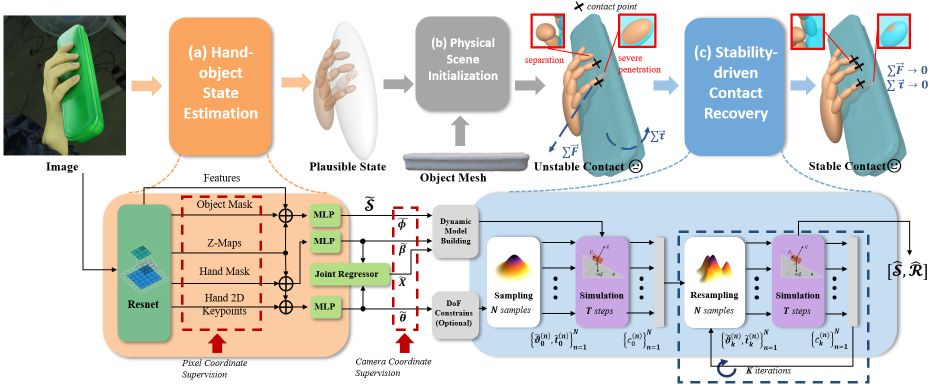
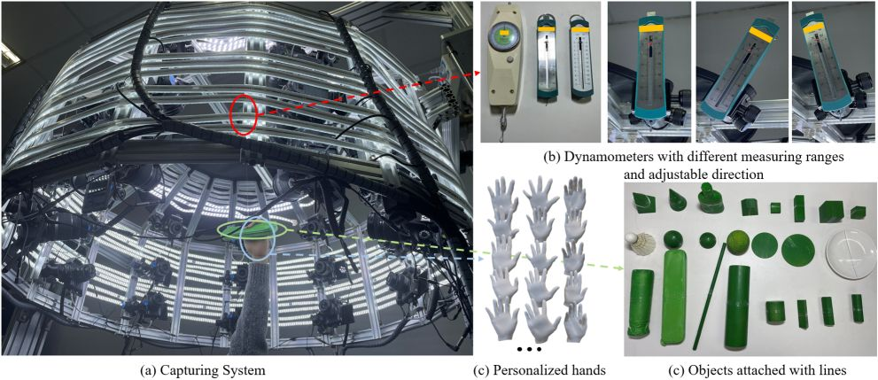
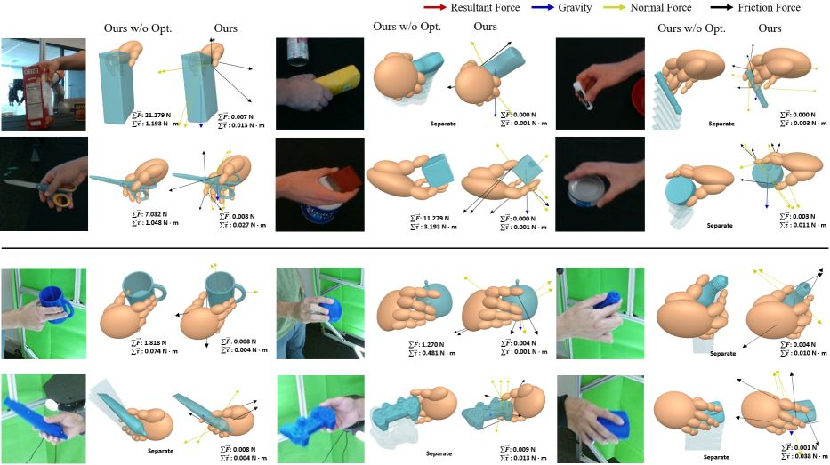

IEEE/CVF Conference on Computer Vision and Pattern Recognition (CVPR), 2022
Stability-driven Contact Reconstruction From Monocular Color Images

Stable contact reconstruction pipeline.
(a) Hand-object state represented by implicit ellipsoids is estimated from the input image; (b) Simulated interaction scene is direct constructed from the estimated parameters; (c) The optimization process is driven by the stability cost in simulation to get more reliable states iteratively. Abstract
Physical contact provides additional constraints for hand-object state reconstruction as well as a basis for further understanding of interaction affordances. Estimating these severely occluded regions from monocular images presents a considerable challenge. Existing methods optimize the hand-object contact driven by distance threshold or prior from contact-labeled datasets. However, due to the number of subjects and objects involved in these indoor datasets being limited, the learned contact patterns could not be generalized easily. Our key idea is to reconstruct the contact pattern directly from monocular images, and then utilize the physical stability criterion in the simulation to optimize it. This criterion is defined by the resultant forces and contact distribution computed by the physics engine. Compared to existing solutions, our framework can be adapted to more personalized hands and diverse object shapes. Furthermore, an interaction dataset with extra physical attributes is created to verify the sim-to-real consistency of our methods. Through comprehensive evaluations, hand-object contact can be reconstructed with both accuracy and stability by the proposed framework.
Dataset

Our CBF dataset (hand-object Contact with Balancing Force recording, version 0.1) dataset contains 25 views of 20 subjects interacting with 10 objects in 5 poses, and provides ground-truth annotations for meshes and masks of hands and objects. It can be downloaded through any of the links below :
- SEU Disk.
- BaiduYun Disk, password: pmyq
Results

Contact Recovery Results on DexYCB (row 1-2) and ContactPose (row 3-4) dataset.
Reference
Zimeng Zhao, Binghui Zuo, Wei Xie and Yangang Wang. "Stability-driven Contact Reconstruction From Monocular Color Images". IEEE/CVF Conference on Computer Vision and Pattern Recognition, (CVPR), 2022.
Acknowledgments: This work was supported in part by the National Natural Science Foundation of China (No. 62076061), the ``Young Elite Scientists Sponsorship Program by CAST" (No. YES20200025), and the ``Zhishan Young Scholar" Program of Southeast University (No. 2242021R41083).